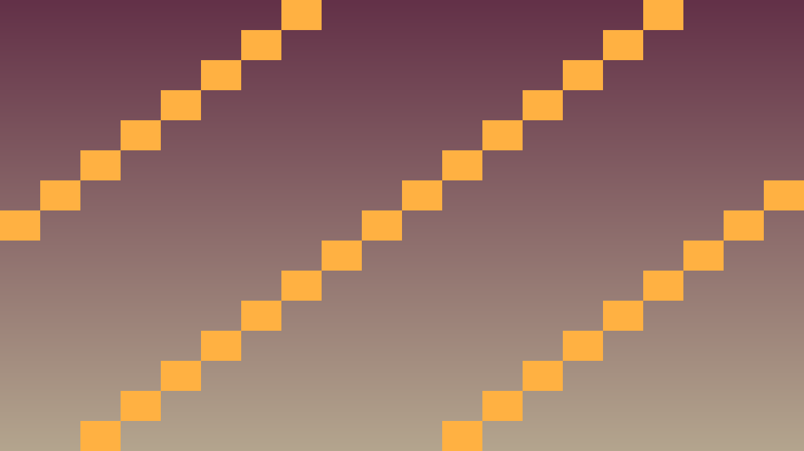
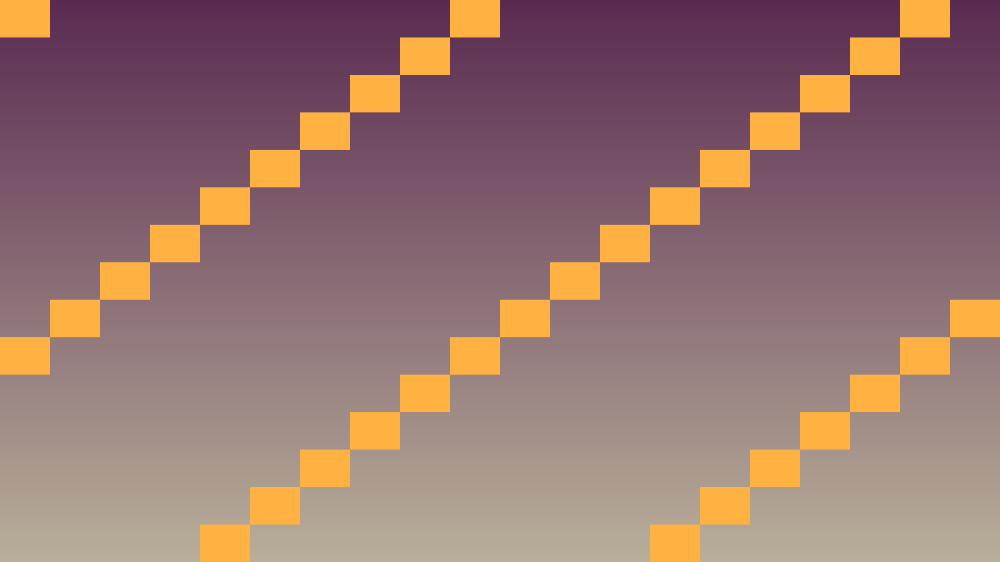

Stundas uzdevums: Saprast, kā Godot organizē objektus Node hierarhijā un izveidot pirmo strādājošu scēnu.
Pirms sāc: izmanto iepriekš apgūto un šīs lapas teorijas/koda piemērus. Ja vajadzīga jauna komanda vai rīks, vispirms atrodi tās paraugu teorijas sadaļā.
Godot fundamentālais princips: viss ir Node (Mezgls). Spēles laukums, varonis, poga, skaņa un kamera ir mezgli, kas savienoti hierarhiskā kokā jeb Scene (Skatā). Scēna nav tikai vizuāls izkārtojums; tā ir arī objektu īpašumtiesību un komunikācijas struktūra.
Labs Scene Tree ir kā skaidrs programmas modelis: katram node ir viena atbildība, bērni papildina vecāku, un atkārtoti lietojami objekti tiek saglabāti kā atsevišķas scēnas. Slikts Scene Tree parasti ir milzīgs Main ar nejaušiem bērniem, kur C++ kodā grūti atrast vajadzīgos objektus.
Galvenie Node tipi 2D spēlēs:
// Pong scēnas struktūra:
// Main (Node2D)
// ├── Background (ColorRect)
// ├── PaddleLeft (CharacterBody2D)
// │ ├── Sprite2D
// │ └── CollisionShape2D
// ├── PaddleRight (CharacterBody2D)
// └── Ball (CharacterBody2D)
// ├── Sprite2D
// └── CollisionShape2DBērnu nodes pārmanto vecāku transformāciju. Ja Sprite2D ir bērns zem PaddleLeft, tad paddle pārvietošana pārvieto arī sprite. Tas ļauj C++ kodā vadīt vienu galveno mezglu, nevis katru vizuālo detaļu atsevišķi.
#include <godot_cpp/classes/character_body2d.hpp>
#include <godot_cpp/classes/node2d.hpp>
#include <godot_cpp/variant/utility_functions.hpp>
using namespace godot;
void Main::_ready() {
CharacterBody2D *left = get_node<CharacterBody2D>("PaddleLeft");
CharacterBody2D *right = get_node<CharacterBody2D>("PaddleRight");
Node2D *ball = get_node<Node2D>("Ball");
UtilityFunctions::print("Scene ready: ", left->get_name(), ", ",
right->get_name(), ", ", ball->get_name());
}Šis ir īss iesildīšanās uzdevums. Nokopē sagatavi, ielīmē to pareizajā koda vietā un palaid. Šeit pietiek droši izmēģināt tēmu 1.2 Scene Tree un Node sistēma; detalizētu izpratni veidosi nākamajos uzdevumos.
Kopējamais piemērs vai sagatave: izmanto šo bloku kā starta punktu, nevis kā gala risinājumu.
#include <godot_cpp/classes/character_body2d.hpp>
#include <godot_cpp/classes/node2d.hpp>
#include <godot_cpp/variant/utility_functions.hpp>
using namespace godot;
void Main::_ready() {
CharacterBody2D *left = get_node<CharacterBody2D>("PaddleLeft");
CharacterBody2D *right = get_node<CharacterBody2D>("PaddleRight");
Node2D *ball = get_node<Node2D>("Ball");
UtilityFunctions::print("Scene ready: ", left->get_name(), ", ",
right->get_name(), ", ", ball->get_name());
}.cpp vai .hpp failā pie šīs stundas klases.Pievieno šīs stundas paņēmienu kā nelielu, strādājošu spēles mehānikas daļu.
PlayerState, velocity, score vai update_ui()._ready(), _process(), _physics_process(), signāla apstrādātāja vai projekta palīgklases.Pārbaudi, vai C++ algoritms darbojas paredzami spēles vidē.
Ja pamatdarbs ir pabeigts, paplašini spēli ar vienu nelielu C++ uzlabojumu.
Pārbaudi, vai scēnas struktūra ir atkārtoti lietojama.
PaddleRight un izveido to no scenes/Paddle.tscn kā jaunu instanci.PaddleRight un pārbaudi, vai nav pazuduši bērnu nodes.

#include <godot_cpp/classes/character_body2d.hpp>
#include <godot_cpp/classes/node2d.hpp>
#include <godot_cpp/variant/vector2.hpp>
using namespace godot;
void Main::_ready() {
CharacterBody2D *left = get_node<CharacterBody2D>("PaddleLeft");
CharacterBody2D *right = get_node<CharacterBody2D>("PaddleRight");
Node2D *ball = get_node<Node2D>("Ball");
left->set_position(Vector2(40, 360));
right->set_position(Vector2(1240, 360));
ball->set_position(Vector2(640, 360));
}